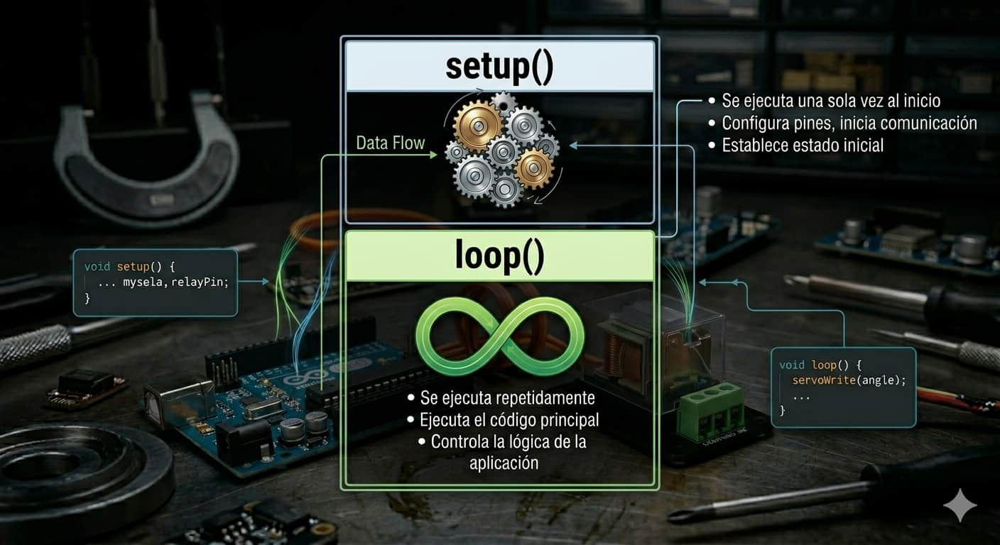
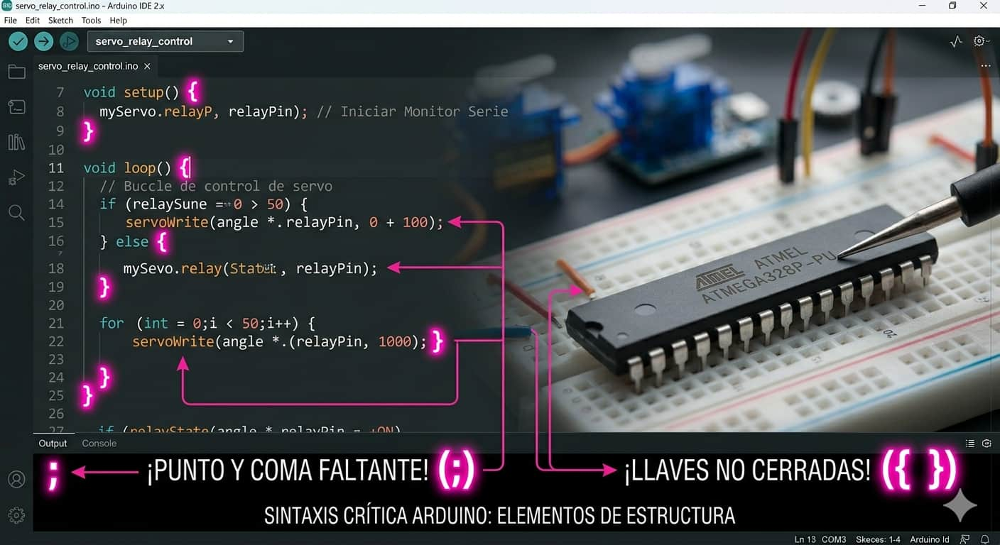
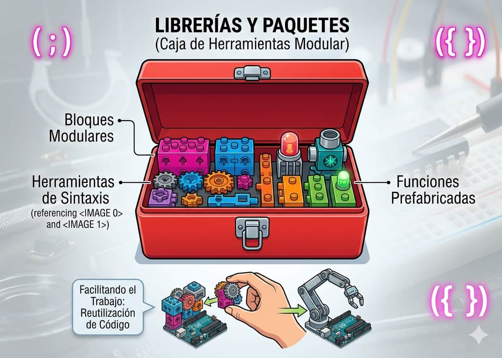
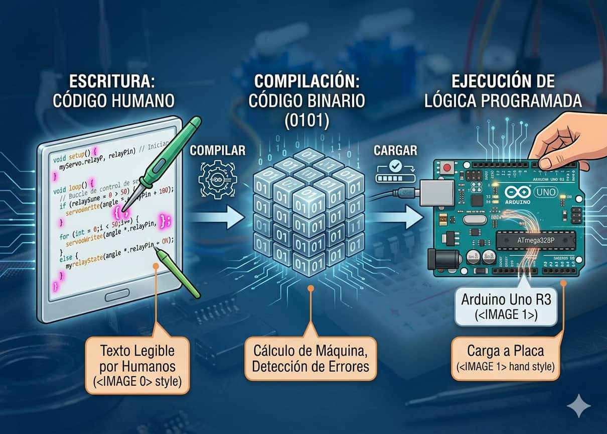
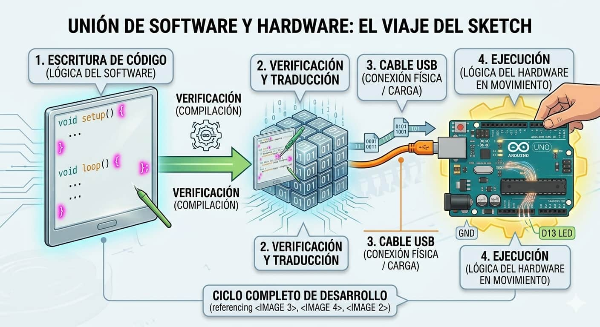

Estructura del Código

Todo programa se organiza en dos partes obligatorias: setup() para configuración inicial y loop() para la ejecución repetitiva.

El Arduino IDE es el software que instalas para escribir tus instrucciones y cargarlas a la placa. Utiliza una versión simplificada de C++, un lenguaje altamente lógico y estructurado que nos permite controlar el hardware paso a paso.

Todo programa se organiza en dos partes obligatorias: setup() para configuración inicial y loop() para la ejecución repetitiva.

Utilizamos llaves { } para agrupar bloques de instrucciones y el punto y coma ; para finalizar cada orden individual.

Son colecciones de funciones preescritas por la comunidad que nos permiten gestionar componentes complejos con pocas líneas de código.

Cuando presionas el botón "Subir", el IDE realiza dos pasos críticos: Compilar (traducir tus palabras a código binario 0 y 1 que el chip comprende) y Cargar (transferir ese binario a la memoria de la placa). Analogía: Es como traducir una receta del español al idioma exacto de un robot cocinero.
Todo programa o "sketch" sigue una plantilla que organiza el comportamiento de los pines de la placa.

Domina estos comandos básicos para empezar a interactuar con tu entorno:
Aprende a configurar tu entorno y escribir tu primer programa funcional: